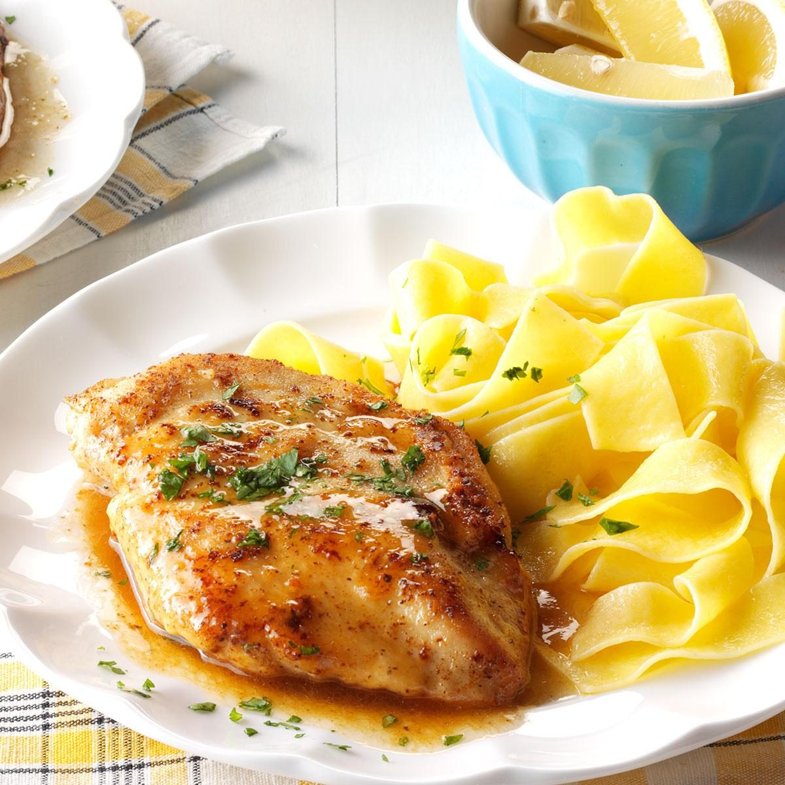

Quick Chicken Piccata

Description
Tender chicken breasts topped with a buttery lemon caper sauce and seared until golden. Can add a side salad and a loaf of crusty bread.
Level: Easy
Prep: 15 minutes
Cook: 25 minutes
Yield: 4 servings
Ingredients
- 1/4 cup all-purpose flour
- 1/2 teaspoon salt
- 1/2 teaspoon pepper
- 4 boneless skinless chicken breast halves (4 ounces each)
- 1/4 cup butter, cubed
- 1/4 cup white wine or chicken broth
- 1 tablespoon lemon juice
- Minced fresh parsley, optional